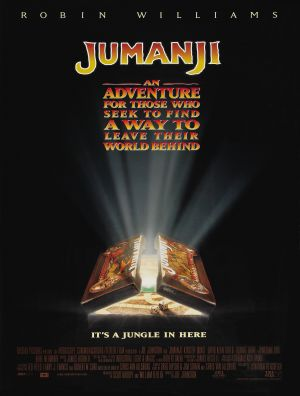

Tudo sobre Jumanji
Jumanji é um filme americano de 1995 baseado em Jumanji, um livro infantil de 1982 escrito e ilustrado por Chris Van Allsburg. A história descreve um jogo de tabuleiro com temática da natureza, onde animais reais e outros elementos aparecem magicamente assim que um jogador joga os dados.
O filme é estrelado por Robin Williams, Bonnie Hunt, Kirsten Dunst, Bradley Pierce, Jonathan Hyde, David Alan Grier, Bebe Neuwirth e Adam Hann-Byrd, e é dirigido por Joe Johnston. Foram gastos em sua produção 65 milhões de dólares, com um retorno de US$ 262 milhões em todo o mundo. Recebeu críticas mistas, geralmente negativas.
Em 2017 o filme ganhou uma sequência: Jumanji: Welcome to the Jungle, estrelado por Dwayne Johnson, Karen Gillan, Kevin Hart, e Jack Black, que foi seguida dois anos depois por Jumanji: The Next Level.
Enredo
Em 1869, perto de Brantford, New Hampshire, dois irmãos enterram um baú bem fundo no solo, ao som de estranhos tambores tribais, esperando que ninguém nunca vá encontrá-lo.
Cem anos mais tarde, em 1969, um garoto de 12 anos, Alan Parrish, visita a fábrica de calçados de propriedade de seu pai, Samuel. Ele encontra seu amigo Carl Bentley, um empregado, que revela um novo protótipo de sapato que ele mesmo inventou. Alan põe o sapato numa esteira e acaba quebrando uma máquina importante, mas Carl assume a responsabilidade e perde o emprego. Depois de ser atacado por vários garotos agressores que também roubam sua bicicleta, Alan segue o som de tambores tribais até um canteiro de obras. Lá ele encontra o baú contendo um jogo de tabuleiro chamado Jumanji, e o leva para casa.
Em casa, após uma discussão com Samuel sobre visitar um colégio interno, Alan planeja fugir. Sarah Whittle, sua amiga, chega para devolver sua bicicleta e eles começam a jogar Jumanji. A cada rodada, somando o resultado do lance dos dados, uma peça do jogo se move sozinha pelas casas do tabuleiro e uma mensagem enigmática que descreve o resultado da jogada é mostrada no cristal no centro do tabuleiro. Sarah joga os dados, mas aparentemente nada acontece. Alan joga os dados e uma mensagem lhe diz para esperar na selva até que alguém consiga tirar com os dados o número 5 ou 8; ele então é sugado para dentro do jogo. Logo após, um bando de morcegos aparece e persegue Sarah para fora da mansão.
Mais...
Lançamento
Jumanji foi lançado nos cinemas em 15 de dezembro de 1995.
Home media
Jumanji foi lançado pela primeira vez em VHS em 14 de maio de 1996 e relançado como DVD da série Collector's em 25 de janeiro de 2000. Isto foi seguido por um lançamento inicial em Blu-ray em 28 de junho de 2011. O Blu-ray foi relançado como uma edição do 20º aniversário em 14 de setembro de 2015 (com a mesma transferência encontrada no lançamento de 2011). Uma versão restaurada foi lançada em 5 de dezembro de 2017 em Blu-ray e 4K UHD para coincidir com a estreia da sequência de 2017.
Spin-off sequência
Jumanji: Bem-Vindo á Selva
Em julho de 2012, surgiram rumores de que um remake do filme já estava em desenvolvimento. Em uma conversa com o The Hollywood Reporter, o presidente da Columbia Pictures, Doug Belgrad, disse: "Vamos tentar reimaginar Jumanji e atualizá-lo para o presente". Em 01 de agosto de 2012, foi confirmado que Matthew Tolmach estaria produzindo a nova versão ao lado de William Teitler, que produziu o filme original.
Em 5 de agosto de 2015, a Sony Pictures Entertainment anunciou seus planos de filmar um remake e definiu a data de lançamento para 25 de dezembro de 2016. A recepção da redes sociais a este anúncio foi negativa, com alguns cartazes dizendo que este anúncio veio logo após o anúncio da morte de Robin Williams. A notícia também foi fortemente criticada por Bradley Pierce e pelo E! Notícias, o último dos quais afirmou que eles sentiram que o remake foi "desnecessário e meio ofensivo". Em 14 de janeiro de 2016, foi anunciado que Jake Kasdan iria dirigir o remake. Em 20 de janeiro de 2016, foi anunciado que o remake foi adiado para 28 de julho de 2017. Em abril de 2016, Dwayne Johnson assinou contrato para produzir e estrelar o remake, enquanto a Variety, TheWrap e o Deadline relataram que Kevin Hart, Jack Black e Nick Jonas estavam sondados para co-estrelar o filme. Em agosto de 2016, Dwayne Johnson confirmou que o filme não seria um remake, e sim uma continuação do filme de 1995 e que seria filmado no Havaí. Em agosto, Johnson anunciou pelo Instagram que Karen Gillan também foi escalada para o filme.
O filme, oficialmente intitulado Jumanji: Welcome to the Jungle, foi lançado em 20 de dezembro de 2017.
Jumanji: The Next Level
O sucesso de Welcome to the Jungle levou a uma continuação com a mesma equipe, lançada em 2019.
(Voltar ao ínicio) ⇧Recepção
Charles Cassady, em sua crítica para o Common Sense Media disse que o filme tem "algumas emoções, mas pode ser demais para os mais pequenos". Michael Dequina, do TheMovieReport.com escreveu que "todos os efeitos no mundo não podem disfarçar o enredo fino". Neil Smith, do BBC.com disse que "retirando o caos CGI (...) o que emerge é um conto bastante tocante de segundas chances e inocência prematuramente perdida". Roger Ebert, escrevendo para o Chicago Sun-Times chamou de "uma extravagância sombria de efeitos especiais cheia de imagens grotescas, gerando medo e desespero". No Rotten Tomatoes, Jumanji tem uma taxa de aprovação de 53% de 36 avaliações, com uma classificação média de 5.7 / 10. No Metacritic, o filme alcançou 39 dos 100 pontos, indicando "revisões geralmente desfavoráveis".
Elenco Principal
Robin Williams --- Alan Parrish
Bonnie Hunt --- Sarah Whittle
Kirsten Dunst --- Judy Shepherd
Bradley Pierce --- Peter Shepherd
David Alan Grier --- Oficial Carl Bentley
Jonathan Hyde --- Van Pelt / Samuel "Sam" Parrish
Bebe Neuwirth --- Tia Nora Shepherd
Patricia Clarkson --- Carol Parrish
Adam Hann-Byrd --- Alan Parrish (criança)
Laura Bell Bundy --- Sarah Whittle (criança)
James Handy --- Caçador
Mais...
(Voltar ao ínicio) ⇧
Saiba mais...
Ainda estamos em construção, volte novamente em outro momento, agradecemos a compreensão..... ;D
| Jumanji | |
|---|---|
|  | |
| Estados Unidos 1995 • cor • 107 min | |
| Formato: | Filme de Televisão |
| Gêneros: | aventura, fantasia, comédia |
| Direção: | Joe Johnston |
| Produção: | Scott Kroopf, William Teitler |
| Elenco: | Veja o elenco principal abaixo |
| Roteiro: | Jonathan Hensleigh, Greg Taylor, Jim Strain |
| Trailers: | Veja... |
| História: | Greg Taylor, Jim Strain, Chris Van Allsburg |
| Baseado em: | Jumanji de Chris Van Allsburg |
| Música: | James Horner |
| Cinematografia: | Thomas E. Ackerman |
| Distribuição: | TriStar Pictures |
| Lançamento: | Estados Unidos, Canadá 15 de dezembro de 1995, Portugal 1 de março de 1996, Brasil 26 de janeiro de 1996 |
| Cronologia: | |
| Continuações: | Jumanji: Welcome to the Jungle 2017 -- Jumanji: The Next Level 2019 |